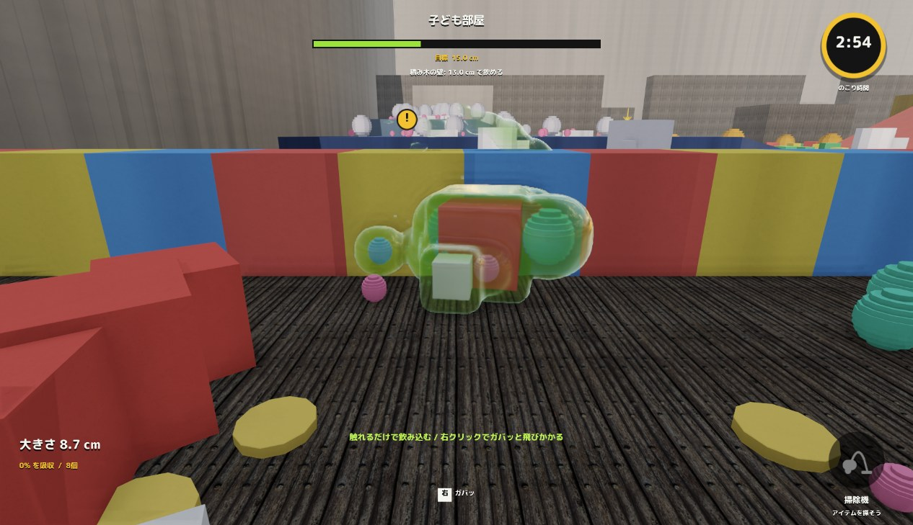

<!doctype html><meta charset="utf-8">
<!-- ロード・クレジット・ポーズ・映像設定の案。座標はゲームと同じ 1280x720。#L1 のように案を選ぶ -->
<style>
@font-face{font-family:Anton;src:url(../../../Resources/Fonts/Anton/Anton-Regular.ttf)}
@font-face{font-family:Zen;src:url(../../../Resources/Fonts/ZenKakuGothicNew/ZenKakuGothicNew-Black.ttf)}
html,body{margin:0;width:1920px;height:1080px;overflow:hidden;background:#f5c400}
#s{position:absolute;left:0;top:0;width:1280px;height:720px;transform:scale(1.5);transform-origin:0 0;overflow:hidden;color:#111;font-family:Zen;background:#f5c400}
#s *{position:absolute;box-sizing:border-box}
.n{font-family:Anton,Zen}.w{white-space:nowrap}
.chip{background:#111;display:flex;align-items:center;justify-content:center;height:34px;width:42px}#s .chip img{position:static;height:28px}
.hint{height:34px;display:flex;align-items:center;gap:10px;font-size:20px;white-space:nowrap}#s .hint *{position:static;flex:none}
</style>
<body><div id="s"></div>
<script>
const S=document.getElementById('s'),A='../../../Resources/Textures/UI/Scale/',K='../scenes/assets/';
const ASP={rat:2.09,jerrycan:.838,tyre:.94,barrel:.644,hydrant:1.044,box:1.59,cat:.687,car:2.306,horse:.701,barrier:1.93,block:1.086,ball:.994};
const TOP=620,tx=cm=>1120*Math.log(Math.max(cm,5)/5)/Math.log(12631/5);
const el=(html)=>{const t=document.createElement('template');t.innerHTML=html.trim();const e=t.content.firstChild;S.append(e);return e};
const txt=(s,x,y,size,o={})=>el(`<div class="${o.num?'n':''} w" style="left:${x}px;top:${y}px;font-size:${size}px;line-height:1.15;color:${o.color||'#111'};${o.css||''}">${s}</div>`);
const box=(x,y,w,h,c,css='')=>el(`<div style="left:${x}px;top:${y}px;width:${w}px;height:${h}px;background:${c};${css}"></div>`);
function tape(marks=[[5],[30],[100],[500],[5000],[12600]],top=TOP,height=80){box(0,top,1280,100,'#f5c400');box(0,top,1280,2,'#111');
  for(let x=0,i=0;x<1280;x+=8,i++){const big=i%10==0,mid=i%5==0;box(x,top,big?2.6:1.4,height*(big?1:mid?.7:.42),'#111')}
  for(const [cm,red,label] of marks)txt(label||(cm>=100?Math.round(cm/100)+'m':cm+'cm'),tx(cm)+6,top+height*.5,27,{num:1,color:red?'#c7241e':'#111'})}
function prop(n,cx,base,h,o={}){const w=h*ASP[n];const f=o.sil?'brightness(0) opacity(.2)':'';
  if(!o.noShadow)el(``);
  el(``)}
function slime(cx,base,w,o={}){const roll=o.roll,h=w/(roll?2.159:2.241),f=String(o.frame??5).padStart(2,'0');
  el(``);
  el(``)}
function logo(i,x,y,s,c='#111'){const p=s*.08,f=c=='#111'?'brightness(0)':'';el(``)}
function logoRow(x,base,k=1){const z=[80,127,193,293];let p=x;z.forEach((s,i)=>{logo(i,p,base-s*k,s*k);p+=s*k*1.04})}
function hint(key,pad,label,x,y,color='#111'){el(`<div class="hint" style="left:${x}px;top:${y}px;color:${color}"><div class="chip"></div>${label}</div>`)}
function arrow(x,y,s=30){el(`<div style="left:${x}px;top:${y}px;width:0;height:0;border-left:${s*.8}px solid #c7241e;border-top:${s/2}px solid transparent;border-bottom:${s/2}px solid transparent"></div>`)}
// 巻尺の上の印: 今の大きさとランクの目標
function flags(){const m=tx(11.8);box(m-2,TOP-34,5,34,'#c7241e');[['C',15],['B',20],['A',25],['S',30]].forEach(([r,c])=>{const x=tx(c);box(x-1,TOP-16,2,16,'#111');box(x-11,TOP-40,22,24,'#111');txt(r,x-5,TOP-41,20,{num:1,color:'#f5c400'})});box(m-74,TOP-62,92,28,'#c7241e');txt('いま',m-64,TOP-59,19,{color:'#fff'})}
const TIPS={big:'大きくなれば、<br>壁も飲める。',t2:'積み木の壁は 8cm から飲める。<br>さっきまで通れなかった道が開く。'};
const P={
// ロード 1: 巻尺そのものが進み具合。スライムが目盛りを進みながら大きくなる
L1(){const pct=.63,x=pct*1120+40;txt('のみ方 3 / 5',48,30,26);txt(TIPS.big,46,70,80,{css:'line-height:1.18'});txt(TIPS.t2,50,272,28,{css:'line-height:1.5'});
  hint('keyboard_arrows_horizontal','', 'ページをめくる',50,372);
  txt('63<span style="font-size:60px">%</span>',x-60,300,130,{num:1});
  box(0,TOP-8,x,8,'#c7241e');slime(x,TOP-8,250,{roll:1});
  txt('読み込んでいます',1000,30,22);logoRow(1016,160,.3);tape()},
// ロード 2: タイトルの物を順に飲んでいく。飲んだ物は体の中に見える
L2(){const items=[['rat',73,16],['jerrycan',120,50],['tyre',180,73],['barrel',280,100],['hydrant',387,96],['box',493,62],['cat',627,147],['car',867,131],['horse',1133,293]];
  txt('のみ方 1 / 5',48,30,26);txt('触れるだけで、飲む。',46,70,72);txt('自分より小さい物は、通るだけで飲める。<br>止まらず動き続けよう。',50,172,28,{css:'line-height:1.5'});
  txt('63<span style="font-size:44px">%</span>',1060,30,96,{num:1});txt('読み込んでいます',1060,150,20);
  for(const [n,cx,h] of items.slice(6))prop(n,cx,TOP,h);
  prop('barrel',450,TOP-90,60,{rot:24,noShadow:1});prop('tyre',330,TOP-70,48,{rot:-18,noShadow:1});prop('jerrycan',230,TOP-44,30,{rot:30,noShadow:1});prop('box',560,TOP-64,40,{rot:-12,noShadow:1});prop('hydrant',640,TOP-70,50,{rot:14,noShadow:1});
  slime(420,TOP,690,{roll:1,frame:4});tape()},
// ロード 3: 説明を図で見せる。巻尺の上で飲める物と飲めない物を比べる
L3(){txt('のみ方 3 / 5',48,30,26);txt('大きくなれば、壁も飲める。',46,66,62);
  const y=TOP-44;
  slime(280,y,360);prop('block',640,y,100);prop('block',640,y-100,100,{noShadow:1});
  prop('box',120,y,44);
  box(100,y-210,360,5,'#c7241e');box(100,y-222,5,28,'#c7241e');box(455,y-222,5,28,'#c7241e');txt('体 8cm',230,y-252,28,{color:'#c7241e'});
  box(708,y-200,5,200,'#c7241e');box(698,y-200,26,5,'#c7241e');box(698,y-5,26,5,'#c7241e');txt('壁 8cm',726,y-120,28,{color:'#c7241e'});
  txt('同じ大きさになったら<br>飲める',850,y-200,38,{css:'line-height:1.35'});txt('まだ大きい物に飛びかかると<br>はじかれて時間を失う',850,y-90,22,{css:'line-height:1.5'});
  hint('keyboard_arrows_horizontal','', 'ページをめくる',960,30);
  box(0,TOP-44,800,36,'#111');txt('読み込んでいます',16,TOP-40,22,{color:'#f5c400'});txt('63%',730,TOP-46,32,{num:1,color:'#f5c400'});
  box(800,TOP-44,480,36,'rgba(17,17,17,.14)');tape()},
// クレジット 1: 巻尺の章立て。スライムが今の章に座る
C1(){const rows=[['SELECT','Daily Beetle'],['ROOM STAGE','Local Forecast'],['TOWN STAGE','Samba Isobel'],['RESULT','Cheery Monday'],['TIME UP','Fluffing a Duck']];
  txt('クレジット',48,30,26);txt('音楽',46,62,104);txt('Kevin MacLeod (incompetech.com) CC BY 4.0',50,196,24);
  rows.forEach(([a,b],i)=>{const y=236+i*48;txt(a,50,y,30,{num:1});txt(b,250,y+1,30)});
  hint('keyboard_arrows_horizontal','','ページをめくる',822,40);hint('keyboard_escape','','もどる',1070,40);
  const names=['音楽','主題歌と効果音','絵とUI','フォント','ソフトウェア'],xs=[20,260,520,760,1000];
  names.forEach((n,i)=>{box(xs[i],564,230,43,i==0?'#111':'rgba(17,17,17,.14)');txt((i+1)+' '+n,xs[i]+12,571,22,{color:i==0?'#f5c400':'#111'})});
  prop('barrel',1110,564,190);slime(150,564,150);tape([[5],[30],[100],[500],[5000],[12600]])},
// クレジット 2: 名前の札が積まれていく。めくると前の札をスライムが飲む
C2(){const rows=[['SELECT / Daily Beetle',-1.5,180],['ROOM STAGE / Local Forecast',1,120],['TOWN STAGE / Samba Isobel',-.8,200],['RESULT / Cheery Monday',1.3,140],['TIME UP / Fluffing a Duck',-1,170]];
  txt('音楽',46,28,104);txt('Kevin MacLeod (incompetech.com) CC BY 4.0',50,162,24);
  rows.forEach(([t,r,x],i)=>{const y=TOP-74-i*72;el(`<div class="w" style="left:${x+380}px;top:${y}px;background:${i%2?'#111':'#fff'};color:${i%2?'#f5c400':'#111'};font-size:32px;padding:12px 26px;transform:rotate(${r}deg);box-shadow:6px 7px 0 rgba(58,40,0,.28)">${t}</div>`)});
  slime(210,TOP,330);logoRow(1016,150,.3);hint('keyboard_arrows_horizontal','','ページをめくる',50,240);hint('keyboard_escape','','もどる',50,284);tape()},
// ポーズ 1: 止まったゲームの上に黄色の面。巻尺に今の大きさと目標が出る
P1(){el(``);box(0,0,1280,720,'rgba(0,0,0,.18)');
  box(0,0,470,720,'#f5c400');txt('一時停止',48,34,72);txt('子ども部屋',50,128,28);
  const it=['再開する','映像設定','タイトルへ'];let y=206;it.forEach((t,i)=>{if(i==0){arrow(48,y+14,30);txt(t,84,y,52)}else txt(t,50,y+12,30);y+=i==0?78:50});
  txt('のこり',50,396,22);txt('2:15',50,420,62,{num:1});txt('大きさ',210,396,22);txt('11.8cm',210,420,62,{num:1,color:'#c7241e'});
  hint('keyboard_escape','','再開',50,506);
  tape();flags()},
// ポーズ 2: 全面を黄色に。今の大きさのスライムと次の目標を比べる
P2(){txt('一時停止',48,30,86);txt('子ども部屋',52,134,28);const it=['再開する','映像設定','タイトルへ'];let y=206;it.forEach((t,i)=>{if(i==0){arrow(48,y+14,30);txt(t,84,y,52)}else txt(t,50,y+12,30);y+=i==0?78:50});
  txt('のこり',430,48,22);txt('2:15',430,72,62,{num:1});txt('次のランク C まで',620,48,22);txt('あと 3.2cm',620,72,62,{num:1,color:'#c7241e'});
  hint('keyboard_escape','','再開',1070,40);
  slime(860,TOP,520);box(1160,TOP-262,5,262,'#c7241e');box(1150,TOP-262,26,5,'#c7241e');txt('目標 15cm',1010,TOP-298,28,{color:'#c7241e'});txt('いま 11.8cm',730,TOP-300,28);
  tape();flags()},
// 映像設定: 品質の 3 段を巻尺に置く。スライムが今の設定に座る
G1(){txt('映像設定',48,28,86);txt('クリック、または 1〜6 キーで切り替え',52,134,22);hint('keyboard_escape','','もどる',1110,40);
  const l=[['HDR ブルーム',1],['レンズフレア',1],['カラーグレーディング',1],['接地影 / GTAO',1],['演出時モーションブラー',0],['被写界深度 / DoF',1]];
  l.forEach(([t,on],i)=>{const y=184+i*54;box(48,y+46,520,2,'#111');txt(i+1,50,y+4,30,{num:1});txt(t,92,y+8,26);box(476,y+6,92,34,on?'#111':'rgba(17,17,17,.14)');txt(on?'ON':'OFF',on?505:501,y+7,24,{num:1,color:on?'#f5c400':'#111'})});
  const r=[['RT 影',1],['RT 反射',0],['RT 間接光',0]];txt('NVIDIA DLSS',650,184,24,{num:1});box(650,216,290,40,'#111');txt('ON / QUALITY',680,222,24,{num:1,color:'#f5c400'});box(944,216,286,40,'rgba(17,17,17,.14)');txt('OFF / DLAA',1020,222,24,{num:1});
  r.forEach(([t,on],i)=>{const y=276+i*54;box(650,y+46,580,2,'#111');txt(t,650,y+8,26);box(1138,y+6,92,34,on?'#111':'rgba(17,17,17,.14)');txt(on?'ON':'OFF',on?1167:1163,y+7,24,{num:1,color:on?'#f5c400':'#111'})});
  txt('露出',650,448,26);txt('105%',730,442,38,{num:1,color:'#c7241e'});for(let i=0;i<=40;i++)box(860+i*9,450,i%10==0?2.4:1.4,i%10==0?30:i%5==0?22:12,'#111');box(860+24*9-3,442,7,44,'#c7241e');
  [['低',170],['標準',600],['高',1040]].forEach(([t,x],i)=>{box(x,564,210,43,i==1?'#111':'rgba(17,17,17,.14)');txt(t,x+14,570,24,{color:i==1?'#f5c400':'#111'})});
  slime(708,564,150);tape([[5],[30],[100],[500],[5000],[12600]])}
};
(P[location.hash.slice(1)]||P.L1)();
</script>
